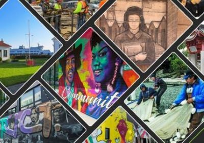

PSRC Data Portal
PSRC's ArcGIS data catalog. Includes Interactive maps and other apps.

Housing Permit Time - Hackathon
An award-winning dashboard created during the One Seattle Open Data Mini-Hackathon December 2022.

Legacy of Structural Racism
An interactive report designed to build an understanding of policies rooted in racism and to help inform and shape strategies.
